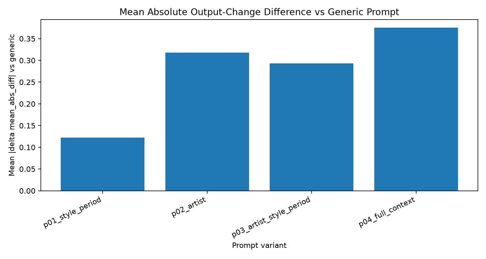
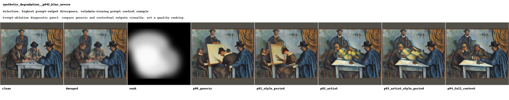
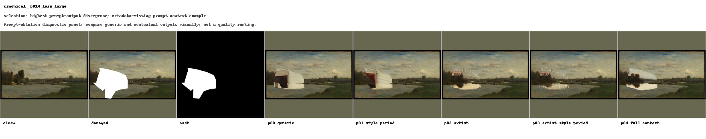
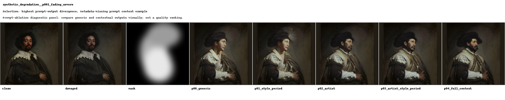
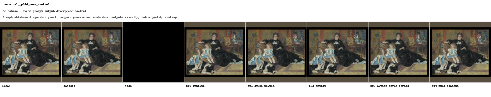
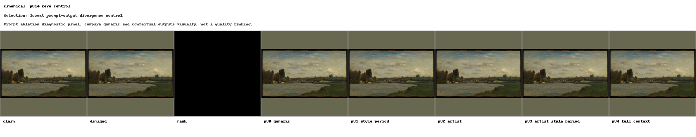

Generated: 2026-08-07T14:29:46.558523+00:00
| prompt_variant_id | prompt_template_name | variant_family | requires_metadata | uses_artist | uses_style_period | uses_title | uses_category | prompt_template |
|---|---|---|---|---|---|---|---|---|
| p00_generic | generic_restoration | generic | False | False | False | False | False | restore the damaged or missing area of the painting while preserving the original composition, colour palette, brushwork, texture, lighting, age, and surrounding visual context |
| p01_style_period | style_period_context | contextual | True | False | True | False | False | restore the damaged or missing area of this {style_period_clause} painting while preserving the original composition, colour palette, brushwork, texture, lighting, age, and surrounding visual context |
| p02_artist | artist_context | contextual | True | True | False | False | False | restore the damaged or missing area of this painting {artist_clause} while preserving the original composition, colour palette, brushwork, texture, lighting, age, and surrounding visual context |
| p03_artist_style_period | artist_style_period_context | contextual | True | True | True | False | False | restore the damaged or missing area of this {style_period_clause} painting {artist_clause} while preserving the original composition, colour palette, brushwork, texture, lighting, age, and surrounding visual context |
| p04_full_context | artwork_full_context | contextual | True | True | True | True | True | restore the damaged or missing area of this painting {artwork_context_clause} while preserving the original composition, colour palette, brushwork, texture, lighting, age, and surrounding visual context |
| prompt_variant_id | prompt_template_name | prompt_variant_family | prompt_variant_order | rows | source_cases | validation_pass_rate | output_written_rate | mean_output_change_from_damaged | median_output_change_from_damaged | mean_max_abs_diff | mean_runtime_seconds | median_runtime_seconds | metadata_missing_rows |
|---|---|---|---|---|---|---|---|---|---|---|---|---|---|
| p00_generic | generic_restoration | generic | 0 | 120 | 120 | 1.0000 | 1.0000 | 6.4478 | 5.1118 | 192.3417 | 9.3023 | 10.3950 | 0 |
| p01_style_period | style_period_context | contextual | 1 | 120 | 120 | 1.0000 | 1.0000 | 6.4394 | 4.9615 | 191.8917 | 8.6568 | 9.4676 | 120 |
| p02_artist | artist_context | contextual | 2 | 120 | 120 | 1.0000 | 1.0000 | 6.3691 | 4.9184 | 192.8750 | 8.6515 | 9.4538 | 0 |
| p03_artist_style_period | artist_style_period_context | contextual | 3 | 120 | 120 | 1.0000 | 1.0000 | 6.3927 | 5.0051 | 193.1333 | 8.6520 | 9.4505 | 120 |
| p04_full_context | artwork_full_context | contextual | 4 | 120 | 120 | 1.0000 | 1.0000 | 6.4045 | 5.1960 | 194.0250 | 8.6717 | 9.4566 | 120 |
| prompt_variant_id | prompt_template_name | prompt_variant_family | prompt_variant_order | compared_pairs | source_cases | validation_pass_rate | generic_validation_pass_rate | mean_output_change_from_damaged | mean_generic_output_change_from_damaged | mean_delta_output_change_vs_generic | median_delta_output_change_vs_generic | mean_abs_delta_output_change_vs_generic | median_abs_delta_output_change_vs_generic | contextual_more_changed_than_generic | contextual_less_changed_than_generic | mean_runtime_seconds | mean_delta_runtime_seconds_vs_generic | metadata_missing_rows |
|---|---|---|---|---|---|---|---|---|---|---|---|---|---|---|---|---|---|---|
| p01_style_period | style_period_context | contextual | 1 | 120 | 120 | 1.0000 | 1.0000 | 6.4394 | 6.4478 | -0.0084 | 0.0000 | 0.1224 | 0.0304 | 59 | 50 | 8.6568 | -0.6454 | 120 |
| p02_artist | artist_context | contextual | 2 | 120 | 120 | 1.0000 | 1.0000 | 6.3691 | 6.4478 | -0.0787 | -0.0033 | 0.3177 | 0.0738 | 47 | 62 | 8.6515 | -0.6508 | 0 |
| p03_artist_style_period | artist_style_period_context | contextual | 3 | 120 | 120 | 1.0000 | 1.0000 | 6.3927 | 6.4478 | -0.0550 | -0.0017 | 0.2931 | 0.0672 | 48 | 61 | 8.6520 | -0.6502 | 120 |
| p04_full_context | artwork_full_context | contextual | 4 | 120 | 120 | 1.0000 | 1.0000 | 6.4045 | 6.4478 | -0.0433 | 0.0000 | 0.3751 | 0.0885 | 52 | 57 | 8.6717 | -0.6306 | 120 |
| dataset_name | mask_type | prompt_variant_id | compared_pairs | source_cases | mean_delta_output_change_vs_generic | mean_abs_delta_output_change_vs_generic | validation_pass_rate | mean_runtime_seconds |
|---|---|---|---|---|---|---|---|---|
| canonical | loss_large | p01_style_period | 10 | 10 | 0.0002 | 0.1992 | 1.0000 | 9.4419 |
| canonical | loss_large | p02_artist | 10 | 10 | -0.1361 | 0.5064 | 1.0000 | 9.3935 |
| canonical | loss_large | p03_artist_style_period | 10 | 10 | -0.1170 | 0.5202 | 1.0000 | 9.5170 |
| canonical | loss_large | p04_full_context | 10 | 10 | 0.0781 | 0.5104 | 1.0000 | 9.5908 |
| canonical | loss_small | p01_style_period | 10 | 10 | 0.0214 | 0.0246 | 1.0000 | 9.6443 |
| canonical | loss_small | p02_artist | 10 | 10 | -0.0371 | 0.0432 | 1.0000 | 9.6760 |
| canonical | loss_small | p03_artist_style_period | 10 | 10 | -0.0464 | 0.0482 | 1.0000 | 9.6925 |
| canonical | loss_small | p04_full_context | 10 | 10 | -0.0475 | 0.0544 | 1.0000 | 9.6900 |
| canonical | mixed_damage | p01_style_period | 10 | 10 | 0.0607 | 0.0787 | 1.0000 | 9.6886 |
| canonical | mixed_damage | p02_artist | 10 | 10 | -0.0896 | 0.1630 | 1.0000 | 9.6751 |
| canonical | mixed_damage | p03_artist_style_period | 10 | 10 | -0.0772 | 0.1312 | 1.0000 | 9.6859 |
| canonical | mixed_damage | p04_full_context | 10 | 10 | -0.0181 | 0.2090 | 1.0000 | 9.7791 |
| canonical | scratch_thin | p01_style_period | 11 | 11 | -0.0025 | 0.0112 | 1.0000 | 9.7110 |
| canonical | scratch_thin | p02_artist | 11 | 11 | -0.0055 | 0.0304 | 1.0000 | 9.7550 |
| canonical | scratch_thin | p03_artist_style_period | 11 | 11 | -0.0104 | 0.0319 | 1.0000 | 9.7331 |
| canonical | scratch_thin | p04_full_context | 11 | 11 | -0.0011 | 0.0231 | 1.0000 | 9.6734 |
| canonical | zero_control | p01_style_period | 11 | 11 | 0.0000 | 0.0000 | 1.0000 | 0.0149 |
| canonical | zero_control | p02_artist | 11 | 11 | 0.0000 | 0.0000 | 1.0000 | 0.0044 |
| canonical | zero_control | p03_artist_style_period | 11 | 11 | 0.0000 | 0.0000 | 1.0000 | 0.0027 |
| canonical | zero_control | p04_full_context | 11 | 11 | 0.0000 | 0.0000 | 1.0000 | 0.0027 |
| damage_size_sensitivity | loss_large | p01_style_period | 5 | 5 | -0.0808 | 0.1372 | 1.0000 | 9.4579 |
| damage_size_sensitivity | loss_large | p02_artist | 5 | 5 | -0.0740 | 0.2322 | 1.0000 | 9.4564 |
| damage_size_sensitivity | loss_large | p03_artist_style_period | 5 | 5 | -0.0700 | 0.2198 | 1.0000 | 9.4338 |
| damage_size_sensitivity | loss_large | p04_full_context | 5 | 5 | -0.0218 | 0.3801 | 1.0000 | 9.4506 |
| mask_robustness | loss_large | p01_style_period | 5 | 5 | -0.1194 | 0.1611 | 1.0000 | 9.4417 |
| mask_robustness | loss_large | p02_artist | 5 | 5 | -0.0431 | 0.1796 | 1.0000 | 9.4367 |
| mask_robustness | loss_large | p03_artist_style_period | 5 | 5 | -0.0714 | 0.0973 | 1.0000 | 9.4301 |
| mask_robustness | loss_large | p04_full_context | 5 | 5 | -0.0299 | 0.2936 | 1.0000 | 9.4290 |
| mask_robustness | loss_small | p01_style_period | 7 | 7 | 0.0050 | 0.0169 | 1.0000 | 9.4667 |
| mask_robustness | loss_small | p02_artist | 7 | 7 | -0.0723 | 0.0775 | 1.0000 | 9.4432 |
| mask_robustness | loss_small | p03_artist_style_period | 7 | 7 | -0.0598 | 0.0665 | 1.0000 | 9.4228 |
| mask_robustness | loss_small | p04_full_context | 7 | 7 | -0.0547 | 0.0715 | 1.0000 | 9.4362 |
| mask_robustness | scratch_thin | p01_style_period | 5 | 5 | -0.0033 | 0.0104 | 1.0000 | 9.4600 |
| mask_robustness | scratch_thin | p02_artist | 5 | 5 | 0.0064 | 0.0198 | 1.0000 | 9.4415 |
| mask_robustness | scratch_thin | p03_artist_style_period | 5 | 5 | 0.0006 | 0.0144 | 1.0000 | 9.4365 |
| mask_robustness | scratch_thin | p04_full_context | 5 | 5 | 0.0015 | 0.0138 | 1.0000 | 9.4469 |
| synthetic_degradation | blur | p01_style_period | 5 | 5 | -0.1707 | 0.8273 | 1.0000 | 9.5189 |
| synthetic_degradation | blur | p02_artist | 5 | 5 | -2.0033 | 2.3343 | 1.0000 | 9.5255 |
| synthetic_degradation | blur | p03_artist_style_period | 5 | 5 | -1.3629 | 2.3084 | 1.0000 | 9.5012 |
| synthetic_degradation | blur | p04_full_context | 5 | 5 | -1.6738 | 2.7557 | 1.0000 | 9.5171 |
| synthetic_degradation | blur_fading | p01_style_period | 5 | 5 | -0.0186 | 0.0782 | 1.0000 | 9.4726 |
| synthetic_degradation | blur_fading | p02_artist | 5 | 5 | -0.2986 | 0.4424 | 1.0000 | 9.4801 |
| synthetic_degradation | blur_fading | p03_artist_style_period | 5 | 5 | -0.1639 | 0.3331 | 1.0000 | 9.4607 |
| synthetic_degradation | blur_fading | p04_full_context | 5 | 5 | -0.3260 | 0.3712 | 1.0000 | 9.4737 |
| synthetic_degradation | dirt_dust | p01_style_period | 5 | 5 | -0.0058 | 0.0091 | 1.0000 | 9.4381 |
| synthetic_degradation | dirt_dust | p02_artist | 5 | 5 | -0.0013 | 0.0197 | 1.0000 | 9.4423 |
| synthetic_degradation | dirt_dust | p03_artist_style_period | 5 | 5 | 0.0040 | 0.0176 | 1.0000 | 9.4205 |
| synthetic_degradation | dirt_dust | p04_full_context | 5 | 5 | 0.0215 | 0.0268 | 1.0000 | 9.4350 |
| synthetic_degradation | discolouration | p01_style_period | 6 | 6 | 0.1926 | 0.2555 | 1.0000 | 9.4812 |
| synthetic_degradation | discolouration | p02_artist | 6 | 6 | 0.0674 | 0.3498 | 1.0000 | 9.4578 |
| synthetic_degradation | discolouration | p03_artist_style_period | 6 | 6 | -0.0852 | 0.2853 | 1.0000 | 9.4277 |
| synthetic_degradation | discolouration | p04_full_context | 6 | 6 | -0.0375 | 0.5550 | 1.0000 | 9.4710 |
| synthetic_degradation | fading | p01_style_period | 5 | 5 | 0.0063 | 0.1227 | 1.0000 | 9.5068 |
| synthetic_degradation | fading | p02_artist | 5 | 5 | 0.0211 | 0.9716 | 1.0000 | 9.4852 |
| synthetic_degradation | fading | p03_artist_style_period | 5 | 5 | 0.1155 | 0.8529 | 1.0000 | 9.4363 |
| synthetic_degradation | fading | p04_full_context | 5 | 5 | 0.0623 | 1.0435 | 1.0000 | 9.5117 |
| synthetic_degradation | fading_discolouration | p01_style_period | 5 | 5 | -0.0216 | 0.0614 | 1.0000 | 9.5117 |
| synthetic_degradation | fading_discolouration | p02_artist | 5 | 5 | 0.1273 | 0.2194 | 1.0000 | 9.4790 |
| synthetic_degradation | fading_discolouration | p03_artist_style_period | 5 | 5 | 0.1041 | 0.1947 | 1.0000 | 9.4279 |
| synthetic_degradation | fading_discolouration | p04_full_context | 5 | 5 | 0.1550 | 0.1550 | 1.0000 | 9.4420 |
| synthetic_degradation | partial_transparency | p01_style_period | 5 | 5 | -0.0004 | 0.3536 | 1.0000 | 9.4563 |
| synthetic_degradation | partial_transparency | p02_artist | 5 | 5 | 0.8120 | 0.8120 | 1.0000 | 9.4716 |
| synthetic_degradation | partial_transparency | p03_artist_style_period | 5 | 5 | 0.7340 | 0.7340 | 1.0000 | 9.4953 |
| synthetic_degradation | partial_transparency | p04_full_context | 5 | 5 | 0.6621 | 0.8491 | 1.0000 | 9.4969 |
| synthetic_degradation | water_stain | p01_style_period | 5 | 5 | -0.0393 | 0.0683 | 1.0000 | 9.4911 |
| synthetic_degradation | water_stain | p02_artist | 5 | 5 | 0.2061 | 0.2061 | 1.0000 | 9.4325 |
| synthetic_degradation | water_stain | p03_artist_style_period | 5 | 5 | 0.1842 | 0.1842 | 1.0000 | 9.4560 |
| synthetic_degradation | water_stain | p04_full_context | 5 | 5 | 0.4412 | 0.4412 | 1.0000 | 9.4716 |
| synthetic_degradation | water_stain_dirt | p01_style_period | 5 | 5 | -0.1442 | 0.1471 | 1.0000 | 9.4313 |
| synthetic_degradation | water_stain_dirt | p02_artist | 5 | 5 | -0.0837 | 0.1676 | 1.0000 | 9.4552 |
| synthetic_degradation | water_stain_dirt | p03_artist_style_period | 5 | 5 | -0.1051 | 0.1724 | 1.0000 | 9.4361 |
| synthetic_degradation | water_stain_dirt | p04_full_context | 5 | 5 | -0.2324 | 0.3079 | 1.0000 | 9.4633 |

| selection_rank | source_case_key | dataset_name | painting_id | mask_type | selection_reason | largest_divergence_prompt_variant_id | max_abs_delta_output_change_vs_generic | mean_abs_delta_output_change_vs_generic |
|---|---|---|---|---|---|---|---|---|
| 1 | synthetic_degradation__p001_blur_severe | synthetic_degradation | p001 | blur | highest prompt-output divergence; metadata-missing prompt context example; dataset-mask coverage example | p02_artist | 6.9797 | 4.9160 |
| 2 | synthetic_degradation__p043_blur_severe | synthetic_degradation | p043 | blur | highest prompt-output divergence; metadata-missing prompt context example | p04_full_context | 4.3715 | 3.2150 |
| 3 | synthetic_degradation__p039_fading_severe | synthetic_degradation | p039 | fading | highest prompt-output divergence; metadata-missing prompt context example | p04_full_context | 2.0561 | 1.4956 |
| 4 | canonical__p014_loss_large | canonical | p014 | loss_large | highest prompt-output divergence; metadata-missing prompt context example | p03_artist_style_period | 1.9080 | 1.0723 |
| 5 | synthetic_degradation__p001_partial_transparency_severe | synthetic_degradation | p001 | partial_transparency | highest prompt-output divergence; metadata-missing prompt context example | p03_artist_style_period | 1.8595 | 1.1384 |
| 6 | synthetic_degradation__p039_water_stain_severe | synthetic_degradation | p039 | water_stain | highest prompt-output divergence; metadata-missing prompt context example | p04_full_context | 1.8577 | 0.9355 |
| 7 | synthetic_degradation__p018_blur_severe | synthetic_degradation | p018 | blur | highest prompt-output divergence; metadata-missing prompt context example | p04_full_context | 1.7756 | 1.2292 |
| 8 | synthetic_degradation__p001_fading_severe | synthetic_degradation | p001 | fading | highest prompt-output divergence; metadata-missing prompt context example | p04_full_context | 1.7241 | 1.2265 |
| 9 | canonical__p004_zero_control | canonical | p004 | zero_control | lowest prompt-output divergence control | p01_style_period | 0.0000 | 0.0000 |
| 10 | canonical__p008_zero_control | canonical | p008 | zero_control | lowest prompt-output divergence control | p01_style_period | 0.0000 | 0.0000 |
| 11 | canonical__p014_zero_control | canonical | p014 | zero_control | lowest prompt-output divergence control | p01_style_period | 0.0000 | 0.0000 |
| 12 | synthetic_degradation__p001_discolouration_severe | synthetic_degradation | p001 | discolouration | metadata-missing prompt context example | p04_full_context | 1.6291 | 1.0077 |









